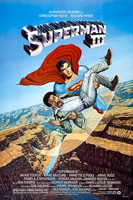

6.5
超人3
Superman III
1983
美国
评分 6.5
导演:
理查德·莱斯特
演员:
克里斯托弗·里夫 / 理查德·普赖尔 / 杰基·库珀 / 马克·麦克卢尔 / 安妮特·奥图
类型:
冒险,动作,科幻
剧情简介
久别重返家乡的克拉克在高中同学会上与旧日暗恋的拉娜重逢。她的笑容依然温柔，让他原本平静的生活泛起久违的悸动。两人在小镇的清晨与晚风中重新靠近，那些被压在超人身份之下的私人情感，第一次如此真实地浮出水面。然而，他对普通生活的向往也让注意力出现偏差，一次突发灾难中，他因迟疑而错过最佳救援时机，街道上的混乱与伤亡令他深感内疚，这种裂痕悄然影响着他的判断。与此同时，世界另一端，一场精密的阴谋正在酝酿。巨富利用卫星系统操纵全球气候，将自然的力量变成牟利的工具。暴雨、旱灾与风暴在各地频繁出现，新闻报道不断发出警告，城市与乡村都陷入不安。更危险的是，他秘密打造了一台拥有自主决策能力的超级电脑，企图以此构建一种难以反抗的科技统治。当灾难逐渐逼近无法忽视的程度，克拉克从自责中振作。他重新穿上标志性的战衣，在高空俯瞰世界的动荡。超级电脑的防御系统冷酷而精准，从电磁脉冲到金属触手，每一项设计都直指他的弱点。激烈的对抗在荒野设施中展开，火光映照着钢铁与电路交织的怪物。超人在一次次被逼退中找回初心，他将全部力量投入最后的反击，让失控的科技阴影逐渐崩解，也让自己重新理解保护世界的意义。